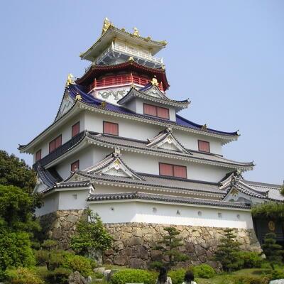
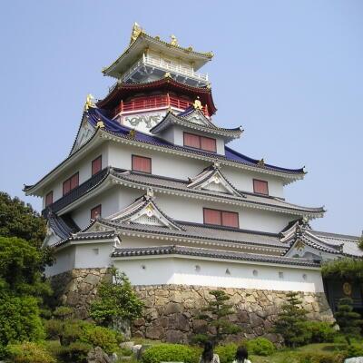
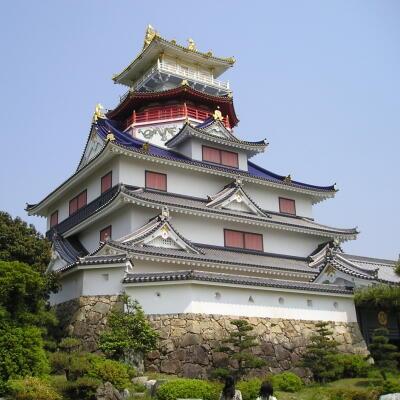
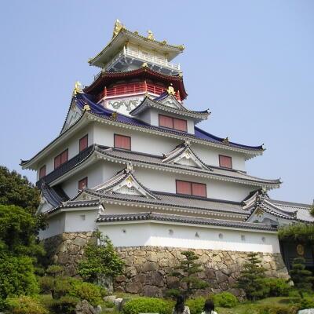
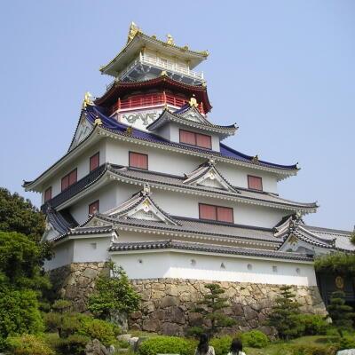

織田信長の紹介  プロフィール 戦国時代から安土桃山時代にかけての武将・戦国大名。三英傑の一人。尾張国（現在の愛知県）の古渡城主・織田信秀の嫡男。 尾張守護代の織田氏の中でも庶流・弾正忠家の生まれであったが、父の代から主家の清洲織田氏（織田大和守家）や尾張守護の斯波氏をも凌ぐ力をつけ、家督争いの混乱を収めて尾張を統一し、桶狭間の戦いで今川義元を討ち取ると、婚姻による同盟策などを駆使しながら領土を拡大した。足利義昭を奉じて上洛すると、将軍、次いでは天皇の権威を利用して天下に号令。後には義昭を追放して室町幕府を事実上滅ぼし、畿内を中心に強力な中央集権的政権（織田政権）を確立して天下人となった。これによって他の有力な大名を抑え、戦国乱世の終焉に道筋をつけた。しかし天正10年6月2日（1582年6月21日）、重臣・明智光秀に謀反を起こされ、本能寺で自害した。すでに家督を譲っていた嫡男・織田信忠も同日に二条城で自害し、信長の政権は、豊臣秀吉による豊臣政権、徳川家康が開いた江戸幕府へと引き継がれていくことになる。 彼から、クリエイターを目指す君へのメッセージ 「理想を持ち、信念に生きよ。理想や信念を見失った者は、戦う前から負けているといえよう。そのような者は廃人と同じだ。」 「生まれながらに才能のある者は、それを頼んで鍛錬を怠る、自惚れる。しかし、生まれつきの才能がない者は、何とか技術を身につけようと日々努力する。心構えがまるで違う。これが大事だ。」 「必死に生きてこそ、その生涯は光を放つ。」 「攻撃を一点に集約せよ、無駄な事はするな。」 「器用というのは他人の思惑の逆をする者だ。」 「臆病者の目には、敵は常に大軍に見える。」 「組織に貢献してくれるのは優秀な者よりも能力は並の上だが、忠実な者の方だ。」
 



 
